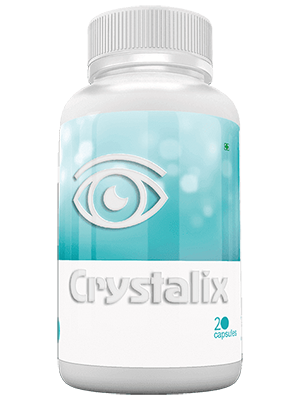

आंखों की सर्जरी नहीं की जा सकती है, ज्यादातर मामलों में, यह पैसे की बर्बादी है
भारत में अधिकांश निजी क्लीनिकों में, घोटालों ने दूसरे दिन तोड़ दिया। डॉक्टरों ने मरीजों में से एक को दवाओं में से एक को लिखने से इनकार कर दिया और सर्जरी पर जोर दिया। निरीक्षण चल रहे हैं। अब तक, डेटा निम्नानुसार है: 76% संचालन से बचा जा सकता था।
यह कहानी दिसंबर की शुरुआत में शुरू हुई थी। जब मरीजों में से एक, सुमन देवी, स्थानीय पुलिस के लिए धोखाधड़ी के ज्ञात क्लीनिकों में से एक पर आरोप लगाया। स्थिति बेहद सरल साबित हुई: महिला को एक महंगा ऑपरेशन सौंपा गया था, जिसकी लागत बीमा द्वारा कवर नहीं की गई थी। सुमन पहले परेशान थे क्योंकि सर्जरी करने की कोई वित्तीय संभावना नहीं थी और उसकी दृष्टि सचमुच हर महीने गिर रही थी। सुमन ने जानकारी खोजना शुरू कर दिया और एक उपाय की खोज की जिसने 95-100% तक पूरी तरह से चिकित्सीय तरीके से दृष्टि बहाल करने का वादा किया। महिला क्लिनिक, पुलिस और स्थानीय मीडिया में गई। उसके लिए धन्यवाद, क्लिनिक में एक चेक-अप शुरू किया गया था।
यह पता चला कि डॉक्टरों को कैप्सूल का उपयोग करने से प्रतिबंधित किया जाता है थेरेपी में। एक कारण से, संचालन की संख्या में कमी, क्योंकि इन कैप्सूल के स्वागत के लिए धन्यवाद, सर्जन की भागीदारी के बिना दृष्टि को बहाल किया जा सकता है। लेकिन क्लिनिक के राजस्व को 60% से अधिक कम करेगा क्योंकि ग्राहक घर पर इलाज प्राप्त कर सकते हैं।
सर्जरी क्या है? यह संरचना के साथ हस्तक्षेप है, यह एक निशान है जो जीवन भर रहता है। हाँ, आप इसे नहीं देख सकते हैं, लेकिन यह जगह पहले ही क्षतिग्रस्त है। एक बार फिर, कुछ जानते हैं कि 90% से अधिक मामलों में, 3-5 साल के लिए पुन: संचालन आवश्यक है, और सर्जरी और हमेशा के लिए दृष्टि को पुनर्स्थापित करता है। वास्तव में, यह दृश्य अंगों में होने वाली सभी प्रक्रियाओं को सामान्य करता है
कैसे काम करता है?
- सूजन, तनाव और सूखी आंखों से राहत देता है
- रेटिना को मजबूत करता है, इसकी वसूली को बढ़ावा देता है
- फंडस प्रेशर को सामान्य करता है
- हाइपरटोनिया से राहत देता है
आंखों की मांसपेशियों, आंख की संवहनी दीवारों को मजबूत करता है, स्पष्ट दृष्टि देता है और स्पष्टता को सामान्य करता है।
जैसे-जैसे वैज्ञानिकों और डॉक्टरों का कहना है, दृष्टि की हानि के 86% मामलों की अनुमति देता है और सर्जरी के बिना 100% दृष्टि को बहाल करने में मदद करता है।
उपचार घर पर किया जा सकता है; आपको केवल 3-6 सप्ताह के लिए कैप्सूल को 2 बार कैप्सूल लेना है। कुछ दिनों के बाद, आप देखेंगे कि आपकी दृष्टि में सुधार कैसे होता है।
क्लिनिकल परीक्षण
94% की जांच की गई इष्टतम स्तरों पर उनके स्तर को बढ़ाया
91% की जांच की गई हाइपरोपिया के लक्षणों को समाप्त कर दिया
83% की जांच की गई अपने शुरुआती और अपरिपक्व अवस्था में मोतियाबिंद से ठीक हो गए थे
92% जिन्होंने जांच की ग्लूकोमा के कारण सर्जरी से बचा
98% की जांच की गई आंखों के प्राकृतिक हाइड्रेशन को सामान्य करने में कामयाब रहे
के केवल प्राकृतिक घटकों के हिस्से के रूप में - आंखों के लिए सबसे फायदेमंद पौधों के अत्यधिक केंद्रित निष्कर्ष।
- आंखों की बीमारियों की रोकथाम, सहित। Myocopies, glaucomas और मोतियाबिंद
- पुनर्स्थापित करें और दृष्टि को संरक्षित करें
- आंखों की सुरक्षा जब दृश्य लोड बढ़ता है (कंप्यूटर पर काम करते समय और सूरज की रोशनी के संपर्क में)
- इंट्राओकुलर दबाव को सामान्य करें
- लेंस संरक्षण, जिसमें opacification शामिल है
- दृश्य तीक्ष्णता में सुधार
- विजन कंट्रास्ट में सुधार
- विजन के अंग की क्षतिग्रस्त कोशिकाओं की मरम्मत
- दृष्टि के अंगों में रक्त परिसंचरण में सुधार
- शुष्क आंख सिंड्रोम (आंख थकान, खुजली, लाली, सूखापन) से राहत देता है।
इससे पहले कि आप सर्जरी करने के लिए बेताब हों, का प्रयास करें। ये कैप्सूल आपको पैसे, समय बचाने और पूरी तरह से अपनी दृष्टि को सामान्य करने में मदद कर सकते हैं। आप एक छूट के साथ आदेश दे सकते हैं पर आधिकारिक वेबसाइट.
टिप्पणियाँ
-
 अरुण कुमारशुक्रिया। गण . मैं चंगा करने की कोशिश करूंगा, वर्षों में दृष्टि अधिक से अधिक गिरती है, मैं ऑपरेशन करने से डरता हूं। पड़ोसी ने ऐसा किया, वह अब 2 साल से पीड़ित रहा है। सब कुछ वहाँ रोट करता है और ठीक नहीं होता है
अरुण कुमारशुक्रिया। गण . मैं चंगा करने की कोशिश करूंगा, वर्षों में दृष्टि अधिक से अधिक गिरती है, मैं ऑपरेशन करने से डरता हूं। पड़ोसी ने ऐसा किया, वह अब 2 साल से पीड़ित रहा है। सब कुछ वहाँ रोट करता है और ठीक नहीं होता है -
संतोष अलीपूरी तरह से पुष्टि की। एक बहुत अच्छी दवा है। मैंने इसके साथ दृष्टि बहाल करने की कोशिश की। हाल ही में, यहां तक कि सड़क के संकेत भी देखे गए हैं। मैंने पीना शुरू कर दिया एक दोस्त की सलाह पर, और सबकुछ सामान्य हो गया। दृश्य acuity वापस आ गया है। मैं उन्हें सभी को सलाह देता हूं!
-
सरोज खटुनलेख के लिए धन्यवाद। यह रोचक है। खासकर जब से कीमत इतनी कम है कि इसे आज़माएं क्यों नहीं? मैं लंबे समय तक दृष्टि की समस्या को हल करना चाहता हूं।
-
श्री बिबीअभी मैं इस दवा के साथ अपनी दृष्टि बहाल कर रहा हूं। यह सब कुछ का दूसरा सप्ताह है, और दृष्टि काफी तेज हो गई है। अगर इससे पहले मैं नीचे की खिड़की से कार नंबर नहीं देख सका, तो अब मैं कर सकता हूं।
-
गीता दासमेरे पास एक रिसेप्शन अनुभव भी है, और एक सकारात्मक भी है। शून्य से शून्य से शून्य 1.5 तक विजन बहाल किया गया। इसमें केवल एक महीने लग गए।
-
शांति सिंहमैंने इस दवा के बारे में बहुत कुछ सुना, मैं इसे अपनी मां के लिए खरीदना चाहता हूं। मैं आपकी सुरक्षा के बारे में पूरी तरह से सुनिश्चित हूं।
-
कल्पना शर्मापिछले साल एक दोस्त ने आंख की सर्जरी की थी। दो बार (इसे दोहराया गया था)। एक आंख में दृष्टि बहुत मुश्किल हो गई। मेरे लिए मैंने फैसला किया - कि मैं अपनी दृष्टि को अपने आप को मदद से बहाल करने जा रहा हूं
-
देवी कोदवा की कार्रवाई से सुखद आश्चर्यचकित। इस लेख को पढ़ने के बाद आदेश दिया गया, लेकिन ईमानदारी से, मुझे अभी भी ज्यादा विश्वास नहीं हुआ। लेकिन 1.5 सप्ताह में, दृष्टि -3.5 से -2.5 से सीधा हो गई। एक अल्पकालिक (कुछ सेकंड) दृष्टि की पूर्ण बहाली प्रकट होने लगती है। मुझे अभी भी उपचार मिल रहा है।
-
मो सोलंकीयह विश्वास करना मुश्किल है कि पारंपरिक कैप्सूल की मदद से दृष्टि को पुनर्स्थापित करना संभव है, लेकिन ईमानदारी से मैं उस ऑपरेशन से डरता हूं जिसे मैंने खरीदने का फैसला किया था। और मुझे लगता है कि मुझे पछतावा नहीं होगा। महीने के दौरान, परिणाम बहुत मूर्त है। मैं सभी को की सिफारिश करता हूं।
-
सरिता रॉयआज मैंने अपना पैकेज उठाया। सब कुछ ठीक है। जल्दी से, धोखाधड़ी के बिना। यह क्लिनिक में उपचार से 15 सस्ता में वास्तव में एक बार बाहर निकला।
-
सुनीता रानीमैंने दृष्टि सुधार करने के बारे में सोचा, लेकिन मैं वास्तव में डर गया था। 2 महीने पहले मुझे पता चला . मैंने इसे शुरू करने के लिए पीने का फैसला किया - दृष्टि में सुधार हुआ है, अब मैं सर्जरी करने वाला नहीं हूं
-
मनोज लालसिफारिशों के लिए धन्यवाद। यह दवा फार्मेसियों में बेची जाती है, लेकिन कीमतें अवास्तविक हैं, मैं इसे आदेश दूंगा स्थल.
-
गोपाल कौरनमस्ते! एक महीने पहले मैंने कोर्स पी लिया और मेरी दृष्टि 1 बन गई !!! मेरे पास सिर्फ शब्द नहीं हैं।
-
शकुंतला पाटिलमैंने तीन पैक का आदेश दिया है। हम पूरे परिवार का इलाज करने जा रहे हैं, उनके पास दृष्टि की समस्याएं हैं
-
लक्ष्मी सेखपास होना आंख थकान को कम करने के लिए। मैं कंप्यूटर पर बहुत काम करता हूं। यह अच्छा है।
-
नरेश मंडलधन्यवाद! हमारे लिए बुजुर्ग लोगों के लिए, सर्जरी बहुत महंगा है। अच्छी बात यह है कि है, आप इसे लगभग मुफ्त में खरीद सकते हैं, लेकिन यह पूरी तरह से मदद करता है।
-
राजेश यादवमैं लंबे समय तक उपाय का उपयोग कर रहा हूं, यह अच्छी तरह से मदद करता है। एक दिन में दृष्टि में सुधार हुआ है, आंखें कम थके हुए हैं।
-
ऐश रामदोस्तों, मुझे आशा है कि यह आपको मेरे जैसे ही खुशी तक पहुंच जाएगा। मुझे -2 से 0.8 तक 12 दिनों में मेरी दृष्टि वापस मिली। के निर्माता के लिए धन्यवाद . मैं सभी स्वस्थ आंखों की कामना करता हूं।
क्लिनिक, एमडी, गणेश महाटो के प्रमुख चिकित्सक, टिप्पणियाँ:
मैं उन आंकड़ों को देना चाहता हूं जो किसी भी शब्दों की तुलना में हमेशा अधिक दृढ़ रहे हैं: 2018-2019 के लिए, क्लीनिक में संचालन की लागत लगभग 150% की वृद्धि हुई, और 2 गुना से संचालन की संख्या! क्या लोगों के पास अधिक पैसा है? मुझे ऐसा नहीं लगता है! यह सिर्फ इतना है कि अब एक और नीति है: डॉक्टरों को सभी रोगियों को संचालन निर्धारित करने की सिफारिश की जाती है। लोग अपनी दृष्टि को वापस पाने के लिए कुछ भी करने को तैयार हैं, और इसलिए अक्सर सहमत होते हैं।